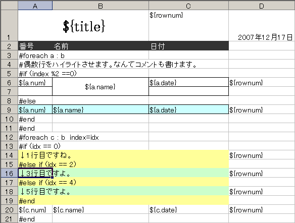

Welcome
Fisshplateとは、Excelにテンプレート式を書くことによって、動的にデータが埋め込まれたExcelファイルを出力する事ができるライブラリです。
テンプレートを用いる事で、Excel帳票を簡単に出力する事が出来ます。
概要
まず、Excelでテンプレートを作ります。
下記の様にテンプレートファイルを読み込み、POIのHSSFWorkbookを生成し、保存します。
public class A{
private String name;
private int num;
private Date date;
A(String name, int num, Date date){
this.name = name;
this.num = num;
this.date = date;
}
public Date getDate() {
return date;
}
public void setDate(Date date) {
this.date = date;
}
public String getName() {
return name;
}
public void setName(String name) {
this.name = name;
}
public int getNum() {
return num;
}
public void setNum(int num) {
this.num = num;
}
}
//データ作成
Map map = new HashMap();
map.put("title", "タイトルである");
List aList = new ArrayList();
aList.add(new A("1行目",10,new Date()));
aList.add(new A("2行目",20,new Date()));
aList.add(new A("3行目",30,new Date()));
aList.add(new A("4行目",10,new Date()));
aList.add(new A("5行目",20,new Date()));
aList.add(new A("6行目",30,new Date()));
map.put("b", aList);
InputStream is = getClass().getResourceAsStream("/FPTemplateTest.xls");
FPTemplate template = new FPTemplate();
HSSFWorkbook wb;
try {
wb = template.process(is, map);
} catch (Exception e) {
//例外処理
throw e;
}
FileOutputStream fos = new FileOutputStream("out.xls");
wb.write(fos);
fos.close();
out.xlsというファイルが出力されます。そのファイルはテンプレートに上記のコードで設定したデータが埋め込まれています。

このように、VelocityやFreeMarkerといったテンプレートエンジンと同じ様に、繰り返しや条件分岐などを反映してExcelを出力する事が出来ます。 テンプレートに設定した背景色、罫線、セルのマージ、フォントなどの書式も反映されます。
名前の由来
Fisshplateでは、Apache POIを用いています。POIのExcel用サブコンポーネントは、HSSF(Horrible SpreadSheet Format)という名前になっています。 これを逆さにするとFSSH、これだと読みにくいので、FiSSHとします。これにTemplateを組み合わせて、Fisshplateと命名しました。
また、英語として正確なスペルに直したfishplateには、鉄道の線路と線路をつなぎとめる鉄板という意味があります。